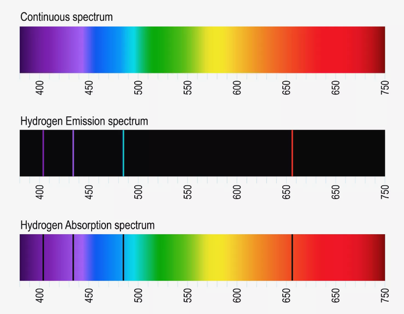

This page was generated from `/home/lectures/exp3/source/notebooks/L25_AMA/L25_structure_of_atoms.ipynb`_.

The Structure of Atoms and the Bohr Model¶
So far we have discussed the models of the structural organization of atoms as proposed by Thomson also called Plum Pudding Model and proposed by Rutherford. We know that charges are not equally distributed across the volume of the atom (as assumed in the plum pudding model). Positive charges are rather comprised within a tiny volume, whereas negative charges form a shell around teh positive core. In detail, positive charges form the core with a diameter of \(R_{\mathrm{C}} < 10^{-14} \; \mathrm{m}\) and a total charge of \(Q = Z\cdot e\), where \(Q\), \(Z\), and \(e\) denote the charge of the core or nucleus, the atomic number, and the elementary charge, respectively. In addition, the nucleus bears allmost the whole mass of the atome. In contrast to the positive charges forming heavy but small nucleus, the number of \(Z\) electrons with a charge of \(-e\) each form the atomic shell. The volume of the shell measures \(10^{12}\) to \(10^{15}\) times the volume of the nucleus and thus allmost the whole volume of the atome. In contrast, the mass of the shell is allmost vanishing.
Now, we will discuss how the atomic shell might be structured. One question is, whether the distribution of electrons is a static distribution of charges or whether the electrons move. The first case is not stable, because of the electrostatic attraction between the positive nucleus and the negative electrons. The second case, however, is puzzling as well, because accelerated and decelerated charges are supposed to emit electromagnetic waves which is not observed.
Atomic sprectra¶
In 1859 Kirchhoff and Bunsen observed that atoms absorb light only for particular values of the wavelength. Moreover these wavelength values are specific for the particular kind of atoms and form the absorption and emission spectra of these atoms. Early instruments for recording spectra made use of a prism as diffracting element and a photo plate for recording. The prism gave rise to a rainbow-colored stripe at the plate and narrow lines of reduced intensity appeard exactly at those positions that correspond to the particular wavelengths of atom absorption. Thus, the negative of the photo plates showed bright lines at these positions and those compositions of lines were called line spectra. On the basis of further experiments one was able to state
For every wavelength at which an atom absorbs emission of light is possible, if the atom was previously supplied with enough energy
The absorption and emission spectra are specific for every kind of atoms. Thus, one is able to determine the chemical element absorbing or emitting the radiation on the basis of the line spectrum.
The values of wavelength (spectral lines) are not arbitrarily narrow. They rather exhibit a distribution of intensity. This indicates that atoms do not emit monochromatic radiation.
In 1885 Balmer discovered that the emission spectrum of hydrogen is compossed of a series of lines that obey a specific law, namely
In this equation \(R_{\mathrm{y}}\) denote the Rydberg constant (\(R_{\mathrm{y}} = 109 \, 678 \; \mathrm{cm}^{-1}\)) and \(n_1\) and \(n_2\) adopt only the integers \(n_1 = 2\) and \(n_2 = 3,4,5 \ldots\). This series of lines with \(n_1 = 2\) is called Balmer series. Later Lyman and Pascher dicovered additional series of the hydrogen emission called Lyman series (\(n_1 = 1\) and \(n_2 = 2,3,4 \ldots\)) and Paschen series (\(n_1 = 3\) and \(n_2 = 4,5,6 \ldots\)).

Fig.: (top) A continuous spectra in the visible range of light. (center) A hydrogen emission line spectrum. Only where hydrogen emitts light narrow lines of light appear. (bottom) A hydrogen absorption spectra. At wavelengths where hydrogen absorbs light the remaining intensity drops and black lines appear. Source: https://www.thoughtco.com/definition-of-balmer-series-604381
The Bohr model¶
On the basis of the spectral lines, a number of models for the architecture of atoms were porposed but they were not able to explaine all experimental results at a whole. Among them were Bohr’s famous model from 1913. In the framework of this model electrons with mass \(m_{\mathrm{e}}\) propagates with a velicity \(v\) at a circular orbit with radius \(r\) around the center of mass of the nucleus-electron system. This system can be described through the motion of a particle with the reduced mass \(\mu = m_{\mathrm{e}} \cdot m_{\mathrm{n}} / \left( m_{\mathrm{e}} + m_{\mathrm{n}} \right)\) around the center of the Coulomb potential from the nucleus at \(r = 0\). The nucleus bears the charge \(Q = Z \cdot \mathrm{e}\) and the mass \(m_{\mathrm{n}}\), which is much greater than \(m_{\mathrm{e}}\) and give rise to \(\mu \approx m_{\mathrm{e}}\). From the equilibrium of the centrifugal for and the centripetal force (Coulomb force),
we can determinethe radius of the orbital
As long as there are no constraints for the energy of the electron \(\mu v^2 / 2\), the orbit can adopt every possible radius. However, if we describe the electron through a matter wave, then for every stationary state of the atom a corresponding standing wave has to exist. Furthermore, is the wave-like description supposed to comply with the classical orbit description, then the circumference of the orbital has to be a magnitude of the de Broglie wavelength,
with \(n = 1,2,3, \ldots\) and \(\lambda_{\mathrm{D}} = h/ \left( \mu \cdot v\right)\). As a consequence, the velocity of the electron then reads as
Now, we can use the expression for the velocity \(v\) in the equilibrium of forces and calculate the orbit radius under the constraint of stationary states being described through matter waves,
The constant \(a_0\),
represents the Bohr radius, which is the smalles radius of the electron orbit (\(n = 1\)) within a hydrogen atom with \(Z = 1\). Due to the constraint \(2 \pi r = n \cdot \lambda_{\mathrm{D}}\), the radii of the electron orbitals are limited to discrete values. Thus, they are quantized.
Concerning the kinetic energy of an electron \(\mu v^2 / 2\) within a discrete orbit, we can make use of the equilibrium of forces and calculate
We can see that the kinetic energy of an electron is equal to \(-1/2\) times the potential energy of the electron in the Coulomb potential of the nucleus. The total energy then reads as
We can further use the expression for the discrete radius \(r = r\left(n\right)\) and get
with the Rydberg energy (Rydberg constant with respect to energy)
It is evident that the electron can adopt only particular values of energy \(E_{\mathrm{n}}\), which might be expressed in terms of a quantum number \(n = 1, 2, 3 \ldots\). These stationary energetic states are also called a quantum states of the atom and the quantum number \(n\) is called the principal quantum number.
Moreover, it is evident that the energy is negative and approaches \(0\) if the obital radius approaches \(+\infty\), which corresponds to the principal quantum number appraoching \(+\infty\).
Fig.: (left) Kinetic energy, potentual energy, and the resulting total energy as sum of the fomer of an electron within the Coulomb potential in the framework of the classical mechanics and electrodynamics in dependence of the distance of the lectron from the nucleus. (right) The same is left, but the quantum mechnical correction resulting in a minimum of the total energy.
Please note:
The particular value of the Ryberg constant depends on the reduced mass of the system electron plus nucleus \(1/\mu = 1/m_{\mathrm{e}} + 1/m_{\mathrm{c}}\). In order to use a general constant one defines the Rydberg constant \(Ry_{\infty}\) for an infinite nucleus mass (\(m_{\mathrm{c}} \longrightarrow \infty\)) with the result \(\mu = m_{\mathrm{e}}\). The Rydberg constant for a finite nuleus mass then is given through \(Ry = Ry_{\infty} \cdot \mu /m_{\mathrm{e}}\), with \(Ry_{\infty} = 109737 \; \mathrm{cm}^{-1}\)
The Bohr model is a semi-classical model. The motion of the electron is treated in the framework of classical mechanics as the motion of a point-like particle within a Coulomb potential plus the additional constraint from the matter wave leading to quantized quantum states.
From the quantized velocity of the elctron \(v = n \cdot h / (2 \pi \mu r)\) it follows \(\mu r v = n \cdot \hbar = \left| \vec{L} \right|\). The angular momentum of the electron is also quantized. It can adopt only magnitude of \(\hbar\). Both conditions, the quantization of the electron orbit circumference \(2 \pi r = n \cdot \lambda_{\mathrm{D}}\) and the quantization of the electron angular momentum \(\left| \vec{L} \right| = \mu r v = n \cdot \hbar\) are identical.
In order to explain the shape of the line spectra we have to state a hypothesis. If a photon is absorbed by an atom, then the atom might go from a lower energtic state \(E \left( n_i \right) = E_{\mathrm{i}}\) to a higher energetic state \(E \left( n_k \right) = E_{\mathrm{k}}\) under the prerequisite of energy conservation,
The energy of the photon is used to compensate the energy difference between state \(E_{\mathrm{k}}\) and state \(E_{\mathrm{i}}\), \(\Delta E = E_{\mathrm{k}} - E_{\mathrm{i}}\). From the relation \(E_{\mathrm{n}} = - Ry^{\ast} \cdot \frac{Z^2}{n^2}\) a we obtain
With the aid of \(\nu = c / \lambda\) as well as \(Ry^{\ast} = Ry \cdot c \cdot h\) we get further
which is the general equation for the lines of a line spectrum and comprises the equation stated by Balmer for special the case of hydorgen (\(Z = 1\)).
In summary we can state:
Electrons propagate in circular orbitals around the nucleus. The radii of the orbital are quantized and the particular radius increase quadratically with the principal quantum number \(n\),
The radii are inverse propertinal to the atomic number.
Every quantum state characterized through the quantum number \(n\) is associated with a particular negative energy \(E_{\mathrm{n}}\),
The energy for \(n \longrightarrow \infty\) and thus \(r \longrightarrow \infty\) is set as \(0\). The difference between \(E_{\mathrm{n}}\) and \(E_{\infty}\) is the ionization energy (the energy the electron needs to excape from the Coulomb potential).
Through absorbing a photon of energy \(h\cdot \nu\) the atom gos from a lower energetic state \(E_{\mathrm{i}}\) into a higher enrgetic state \(E_{\mathrm{k}}\), if conservation of energy is fulfilled.
So far the Bohr model can successfully describe the line spectra. However, since electrons are assumed to propagate at circular orbits, they are supposed to permanently irradiate electromagnetic waves. This gives rise to the questions why does the electron not emit radiation and therefore lose energy and collapse into the nucleus? Or why are atoms stable?
About the stability of atoms¶
The stability of atoms in its lowest energetic state can be explained on the basis of the uncertainty principle. If we assume \(a\) being the average radius of a hydrogen atom, we can state the orbit radius with the uncertainty
since we know the electron has to be somewhere within the atom. As a consequence the radial component \(p_r\) of the electron’s momentum becomes
Because of that, the overall electron momentum has to bigger than the uncertainty
otherwise we would know the momentum with a smaller uncertainty than \(\Delta p_r\). For the electron’s average kinetic and potential energy it follows
and
respectively. The total energy \(E = E_{\mathrm{kin}} + E_{\mathrm{pot}}\) then is given though
The propability to find an electron at the radius \(a_{\mathrm{min}}\) is biggest, for the minimum of the energy \(\mathrm{d}E/\mathrm{d}a = 0\), which leads us to
As a consequence, there is a state of minimum energy with the lower limit
This result is in accord with observation from the Bohr model stating the energy of the lowest state in a hydrogen atom is \(E = - Ry^{\ast}\). Because of this discussion, we can state there is a finite distance \(a_{\mathrm{min}}\) from the nucleus accociated with teh lowest energetic state. Due to the uncertainty relation the kinetic energy increases stronger than the potential energy decreases, if the elctron at moves closer to the nucleus as \(a_{\mathrm{min}}\).